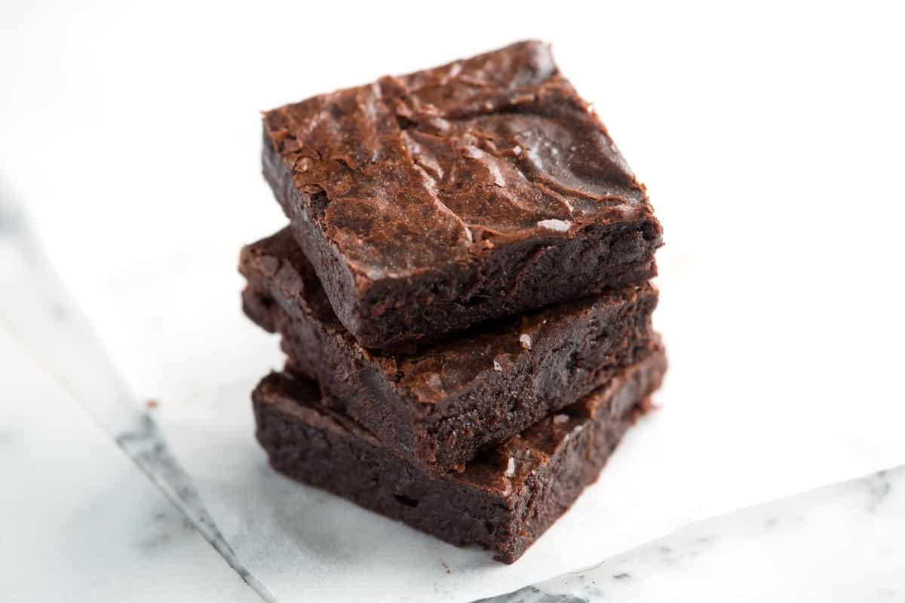

Brownies

Chocolately, fudgey, rich, delicious.
They're brownies. What more needs to be said?
Ingredients
- 10 tablespoons (145 grams) unsalted butter
- 1 ¼ cups (250 grams) granulated sugar
- 3/4 cup plus 2 tablespoons (80 grams) unsweetened cocoa powder
- 1/4 rounded teaspoon kosher salt
- 1 teaspoon vanilla extract
- 2 large cold eggs
- 1/2 cup (65 grams) all-purpose flour
- 2/3 cup (75 grams) chopped walnuts or pecans, optional
Steps
-
Position an oven rack in the lower third of the oven and heat to 325
degrees F. Line the bottom and sides of an 8-inch square baking pan with
parchment paper or aluminum foil, leaving an overhang on two opposite
sides. (This helps when removing the baked brownies from the pan, once
cooled).
-
Add enough water to a medium saucepan so that it is 1 to 2 inches deep.
Heat water until barely simmering.
-
Combine butter, sugar, cocoa powder, and salt in a medium heat-safe
bowl. Rest the bowl over simmering water (if the bottom of the bowl
touches the water, remove a little water). Stir the mixture occasionally
until the butter has melted and the mixture is quite warm. Don’t worry
if it looks gritty; it will become smooth once you add the eggs and
flour.
-
Remove the bowl from heat and set aside for 3 to 5 minutes until it is
only warm, not hot. Stir in the vanilla with a spoon. Then add the eggs,
one at a time, stirring vigorously after each one.
-
When the batter looks thick, shiny, and well blended, add the flour and
stir until fully incorporated, then beat with the wooden spoon or
spatula for 40 to 50 strokes. (The batter will be thick). Beat
vigorously here. You want to see the brownie batter pulling away from
the sides of the bowl (if you do not have the strength to do this by
hand, use a hand mixer). Stir in nuts, if using. Spread evenly in lined
pan.
-
Bake the brownies for 20 to 25 minutes or until a toothpick can be
inserted into the center and come out with a few moist crumbs. As a
visual test, brownies are done when the edges will look dry and the
middle still looks slightly underbaked.
-
Cool completely then remove from pan. For the cleanest lines when
cutting, place into the freezer for 20 to 30 minutes to firm up. Cut
into 16 squares.